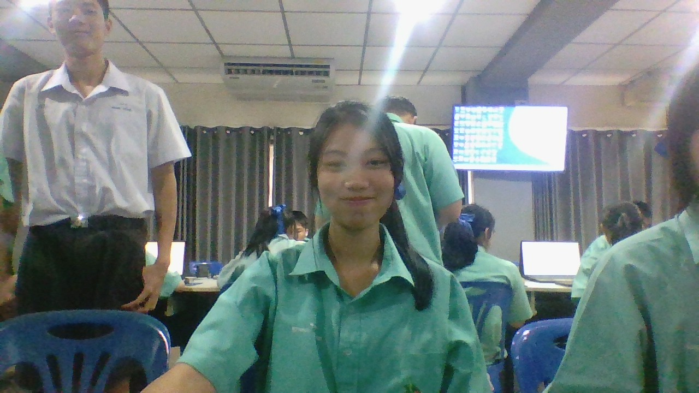

นี่คือพื้นที่รวบรวมผลงานและกิจกรรมที่ภูมิใจครับ
รายละเอียดชิ้นงาน: เขียนอธิบายสั้นๆ ว่าทำอะไร ได้เรียนรู้อะไรจากงานนี้บ้าง
รายละเอียดชิ้นงาน: เข้าร่วมการประกวด หรือกิจกรรมของโรงเรียน...
รายละเอียดชิ้นงาน: เข้าร่วมการประกวด หรือกิจกรรมของโรงเรียน...